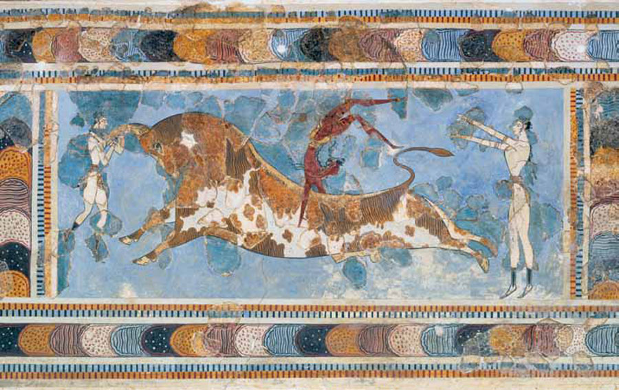

Historical Events
- The Volcanic Eruption
A huge Volcano eruption occured estimated around 1600BCE which is also a factor of the Minoans numbers declining
- Fall of The Palace
The first palace was built at knossos during the time period estimated around 1900BC.
The palace was destroyed caused by the eruption.
- The Establishment of The Second Palace
The second palace is known as Neopalatial period palaces which was built estimated on the 1700BC.
The second palace is used as the center of the minoans as a trading and religious area.
although, the second palace was not entirely finished.
Artistic History
Prince of Lilies
One of the most unique mural painting discovered within the palace was the prince of lilies.
The painting shows a male figure wearing a loincolth and belt with different colours.
The gender was determined through the skin colour of the figure, red represents a male and white for a female.

Bull leaping
The tradition of the Minoans which would require having full control of the wild bull.
Researchers speculates that this is conducted to show a way of tapping into divine power or a form of entertainment.
